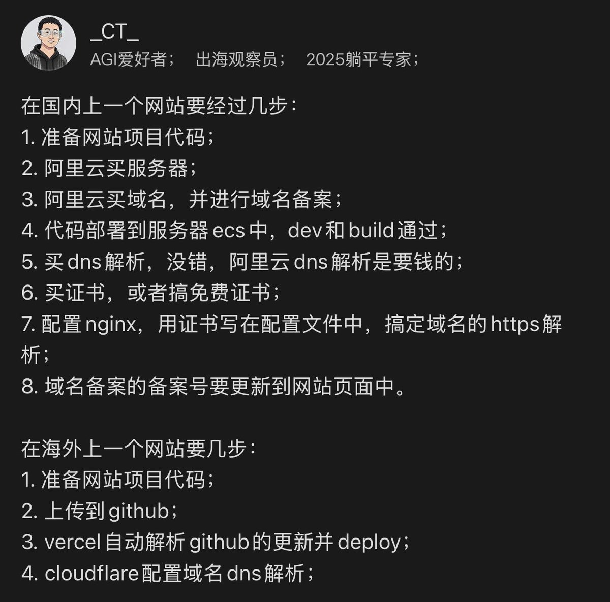

奶昔🥤
@realNyarime
崇洋媚外是吧，那么小题大做买VPS起Nginx？
扯域名备案？国内云厂商也有国际站，例如腾讯云EdgeOne和阿里云ESA都提供静态托管，包含函数支持。这些服务对标Cloudflare Pages、Vercel等静态托管，也是免费3个月自动续签SSL证书。
再者。你都用CF托管域名了，不用Pages？是Vercel没被刷过流量吗？阿里云万网DNS解析不要钱，当然高级功能我更推荐华为云，毕竟能分线路而且免费。还AGI爱好者，这种人也配叫出海观察员？笑死我了🤣

ahhhhfs
@abskoop
上线一个网站需要几步
国内🆚国外 https://t.co/YoLhramqAc